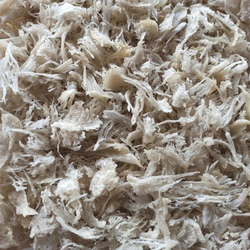
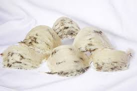
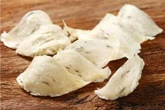

Gambar Produk Sarang Walet
Pilihan sarang walet berkualitas dari Kutai Timur

Sarang Walet Pecahan
Harga lebih terjangkau, cocok untuk olahan minuman dan masakan.

Sarang Walet Mentah
Kualitas alami, cocok untuk proses lanjutan.

Sarang Walet Bersih
Sudah dibersihkan, siap konsumsi.

Sarang Walet Premium
Grade A, pilihan terbaik untuk kualitas tinggi.